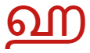

1.严格模式
2.bind方法／this关键字
bind()方法会创建一个新函数，称为绑定函数，当调用这个绑定函数时，绑定函数会以创建它时传入bind()方法的第一个参数作为this，传入 bind() 方法的第二个以及以后的参数加上绑定函数运行时本身的参数按照顺序作为原函数的参数来调用原函数。
bind可以改变当前函数的this指向
var obj = {
name:"admin",
fn:function(a){
console.log(a)
document.onclick = function(){
console.log(this.name);
console.log(a);
console.log(arguments);
}.bind(this,1,2,3,4,5,5,6,2,7,3,8,5,56,0,7,10);
}
}
obj.fn(12);
利用此原理，可以使原本没有这个功能的对象，具有另一个对象的功能
var a = {
name:"admin"
}
var b = {
name:"uesr",
show:function(){
console.log(this.name);
}
}
b.show();
var c = b.show.bind(a);
c();
常用方式，用来改变函数内计时器函数this的指向
for(var i=0;i<ali.length;i++){
ali[i].onclick = function(){
setTimeout(function(){
console.log(this)
}.bind(this),500)
}
}
要求：封装事件委托的函数
3.JSON.parse和JSON.stringify
JSON是一种高效的数据存储格式，JSON的结构和对象一致，也是以键值对的形式来进行存储的；但是JSON是字符型数据
ECMAScript5中新增了对象和JSON数据的有序化和反序化方法：
JSON.parse(str) 将json字符转换成对象
JSON.stringify(obj) 将对象转换成json字符串
对象的key必须放在双引号内var obj = {"left":10}
json的字符串必须是单引号var str = '{"left":10}'
注意：在JSON数据文件中，不允许出现undefined和function和NaN，在强制转换过程中会省略undefined和function的属性，将NaN转成null
实现深拷贝的黑科技：
如果遇到👇这种情况
var obj1 = {
name:{
name2:{
name3:{
name4:"admin";
}
}
}
}
使用for-in遍历只能实现一层深拷贝
var obj2 = {};
for(var i in obj1){
obj2[i] = obj1[i];
}
利用json转换
var obj2 = JSON.parse(JSON.stringify(obj1));
ES6↓↓↓
4.let／const
ES6中新增的声明变量的方式：
let关键字用来声明变量，类似于var，但是使用let声明的变量有以下几点特性：
1.不存在变量提升
2.暂时性死区
3.不允许重复声明，同一作用域内只能声明一次
4.新增的块级作用域
for(作用域A){作用域B} 循环的应用；
5.全局变量不会绑定到window对象
const关键字用来声明常量，其使用规则除了声明之后不能修改之外，其他特性和let一样
本质上来说，const声明的变量并不是变量的值不能改动，而是变量指向的内存地址不得改动，简单的数据类型（数字，字符串，布尔），值就保存在变量指向的那个内存地址，因此等同于常量，但是对于复合型的数据（对象和数组），变量指向的内存地址，保存的只是一个指针，const只能保证这个指针是固定的，至于指向的数据结构就不能控制到了
5.字符串扩展
1.字符串的Unicond表示方式：规则为\u + 四位十六进制；
如console.log(“\u0061”); //打印a
只能是\u0000~\uffff之间的数据，如果超出范围，必须用双子节表示
console.log(“\uD842\uDFB6”) //打印 𠮶
上面是老版本的字符的表达方式
如果不按照规则书写
console.log("\uD842\uDFB69”) //打印 𠮶9
如果想要一次性表示超出范围的字符那么我们可以使用{}来表示；例如:
console.log("\u20BB9"); 这个的打印结果是 拆分开来的 ₻9
console.log("\u{20BB9}"); 这个打印的结果是一个完整的字符 𠮹
ES6支持多种格式的字符表示;
2.字符串的新增方法：
2.1 codePointAt()
console.log("\u{20BB9}");
var s = "𠮹";
console.log(s.length) // 2
console.log(s.charAt(0)) // ''
console.log(s.charAt(1)) // ''
console.log(s.charCodeAt(0)) // 55362
console.log(s.charCodeAt(1)) // 57273
通常来说一个字符占两个字节，对于那些需要占四个字节的字符，JAVAScript用两个字符来表示;
这两个字符在UTF-16中编码为 0xD842 和 0xDFB9 储存起来需要四个字节，那么对于这样四个字节的东西javascript 无法正确判断，而是将其解析为两个字符；
charCodeAt会分别返回前两个字节和后两个字节的值; 而charAt压根就无法识别;
在ES6中提供给我们一个新的方法codePointAt(); 这个方法可以正确解析四个字节的字符。
var s = "𠮹";
console.log(s.codePointAt()) // 134073
2.2 String.fromCodePoint() 相当于ES5内的String.fromCharCode()
先说说 String.fromCharCode()方法；这个方法无法正确识别 32位的 UTF-16字符（也就是上面提到的四个字节的字符 Unicode编码 大于 0xFFFF）;
console.log(String.fromCharCode(0x20BB9 )) //  出现了一个奇怪的字符
原因是什么那？ 因为fromCharCode不识别四个字节的字符， 他会将第一位省略掉 ， 也就是将 0x20BB9 去掉开头 变成了0x0BB9;所以出现的结果不正确;
但是ES6中的String.fromCodePoint()可以正确识别这样的编码;
console.log(String.fromCodePoint(0x20BB9)) //𠮹 显示正确;
2.3 repeat()重复功能
'x'.repeat(3) //xxx；
重复字符串;
2.4 indexOf()补充includes() startsWith() endsWith() 判断字符串中是否存在某个字符串：
var s = 'Hello world!';
s.startsWith('Hello') // true 以参数开头
s.endsWith('!') // true 以参数结尾
s.includes('o') // true 包括参数;
第二种方法接受第二个参数，第二个参数表示从第几位开始;
var s = 'Hello world!';
s.startsWith('world', 6) // true
s.endsWith('Hello', 5) // true
s.includes('Hello', 6) // false
3.for of一种新的遍历方式：
for-of可以用于便利字符串
var s = "abc";
for(let b of s){
console.log(b) // "a" "b" "c"
}
类似于for-in的使用方式
4.字符串模版扩展：
ES6中存在一种新的字符串， 这种字符串是 以 ` ` (波浪线上的那个字符 > 反引号)括起来表示的；
通常我们想要拼接一个带有标签的字符串， 是用这样的方式:
bianliang + " <strong>这是一个文字" + obj.name + "</strong> " + bianliang
但是有了ES6字符串一切都变得非常简单了;
` ${bianliang} <strong>这是一个文字${obj.name}</strong>${bianliang} `
用 ${ } 扩住变量让拼接变得非常容易;
非常简单的换行；
console.log(`string text line 1
string text line 2`);
模板还可以调用函数；
function fn() {
return "Hello World”;
}
`foo ${fn()} bar`
强大的ES6字符串;
了解：正则的扩展
- 正则扩展
1.u
ES6对正则表达式添加了u修饰符，含义为“Unicode模式”，用来正确处理大于\uFFFF的Unicode字符。也就是说，会正确处理四个字节的UTF-16编码。
/^\S$/.test('𠮷') // false
/^\S$/u.test('𠮷') // true
2.y
ES6添加了y修饰符和g类似，不过y 修饰符在下次匹配的时候需要紧跟上次匹配成功之后的结果匹配，而g则是全局匹配;
3.exec() 方法在匹配全局对象的时候， 多次匹配会在上一次结束的地方继续匹配;
var s = 'aaa_aa_a’;
var r1 = /a+/g;
var r2 = /a+/y;
r1.exec(s) // ["aaa”]
r2.exec(s) // ["aaa”]
r1.exec(s) // ["aa”]
r2.exec(s) // null
掌握ES5内容
1. =>函数
优点：
老语法：
var test = function(x){
return x+2;
}
箭头函数
var test = (x)=>x+2;
var 函数名 = 参数 => 运算规则;
省略了function、return关键字和大括号。
使用方法跟以前一样没区别 test(5);
结果： 7
还有好处就是，自动绑定外层this
var obj = {
left : 200,
move : function(){
setTimeout(function(){
//this.left = 100;
//以前这里不能写this
},1000);
}
}
使用了箭头函数：
var obj = {
left : 200,
move : function(){
setTimeout( ()=>{
this.left = 100;
},1000);
}
}
缺点：
第一： 箭头函数是不能new的，它的设计初衷就跟构造函数不太一样
第二： 箭头函数如果要返回一个JSON对象，必须用小括号包起来 var test = ()=>({id:3, val=20})
总结：
在回调函数的时候，偶尔用用箭头函数，还是不错的 [2,3,9,14,8,29,93,30].sort( (a,b) => a-b );
2.解构赋值
var [a,b,c] = [1,2,3];
var {age,name,like} = {name:"admin",age:18,sex:true}
扩展
字符，函数的参数
4.Symbol类型
新增的数据类型：
var s1 = Symbol();
var s2 = Symbol();
var s3 = Symbol("abc");
var s4 = Symbol("abc");
//s1不等于s2
//s3不等于s4
Symbol函数会生成一个唯一的值可以理解为Symbol类型跟字符串是接近的 但每次生成唯一的值，也就是每次都不相等，至于它等于多少，并不重要 这对于一些字典变量，比较有用
var SIZE = {
MIDDLE:Symbol(),
SMALL:Symbol(),
LANGE:Symbol()
}
var obj = {};
switch(SIZE.LANGE){
case SIZE.MIDDLE:obj.size = "S";break;
case SIZE.SAMLL:obj.size = "M";break;
case SIZE.LANGE:obj.size = "L";break;
}
console.log(obj);
//以前我们可能会把small、middle、lange赋值为数字或字符串
//还要确保它们的值不能发生重复，但现在不用担心了
5.Set和Map结构
想当初设计JS的时候，由于有SUN公司人员的参与 再加上当时如日中天的JAVA及其优秀的设计，才使得JS语法及内存设计跟JAVA会如此的接近。但JAVA很多优秀的内容，JS不知道为了什么目的并没有引入，例如Set和Map集合
Set集合，本质上就是对数组的一种包装 例如：
let imgs = new Set();
imgs.add(1);
imgs.add(1);
imgs.add(5);
imgs.add("5");
imgs.add(new String("abc"));
imgs.add(new String("abc"));
打印的结果： 1 5 '5' 'abc' 'abc'
Set集合是默认去重复的，但前提是两个添加的元素严格相等 所以5和"5"不相等，两个new出来的字符串不相等
//普通for-of循环(for-of跟for-in的区别很明显，就是直接取值，而不再取下标了)
for(let item of imgs){
console.log(item); //a //b //c
}
set集合没有提供下标方式的访问，因此只能使用for-of来遍历。
// 下面展示了一种极为精巧的数组去重的方法
let arr = [1,2,3,4,4,3,2,4,1,5,6]
let mySet = new Set(arr);
let newArr = [];
for(let i of mySet){
}
关于遍历的方法 由于Set集合本质上还是一个map，因此会有以下几种奇怪的遍历方法
var imgs = new Set(['a','b','c']); //根据key遍历
for(let item of imgs.keys()){
console.log(item); //a //b //c
}
//根据value遍历
for(let item of imgs.values()){
console.log(item); //a //b //c
}
//根据key-value遍历
for(let item of imgs.entries()){
console.log(item); //['a','a'] //['b','b'] //['c','c']
}
let map = new Map();
map.set("S230", "张三");
map.set("S231", "李四");
map.set("S232", "王五");
获取某一个元素 map.get("s232"); //王五
//循环遍历，配合解构赋值 for(let [key,value] of map){ console.log(key,value); }
7.了解class的写法和继承
class保留字终于成了关键字
终于，我们在有生之年等到class出现了 这下，JS看起来更像一个标准的面相对象的语言了
以前编写一个构造函数（类）
function Pad(color){
this.color = color;
}
现在的写法跟Java更接近了
class Iphone{
constructor(color, size){
this.color = color;
this.size = size;
}
playgame(){
//.............
}
toString(){
return `这台手机的颜色是${this.color} 屏幕大小是${this.size}`;
}
}
我们定义了一个类，名字叫Iphone 通过类生成一个实例： var iphone = new Iphone("白色", 5);
其中constructor被称之为构造方法，在我们new 一个对象的时候，自动被调用
不过本质上，JS依然使用了原型来实现，也就是说，这不过是一个新的写法而已 跟以前的构造函数没有区别。
要注意的是，使用了class来定义类，必须先定义再使用
以前这样写没有问题：
new Person();
function Person(){ }
现在这样写报错：
new Person();
constructor(){ }
}
甚至还可以定义一次性的类
let person = new class{
constructor(){}
}();
这个类被定义出来，只能实例化一次，跟JAVA的匿名内部类很像
关于继承
class Son extends Father{
constructor(age){
super(); //这相当于调用了父类的构造方法，类似于传统写法Father.call(this)
//但是这个方法是必须放在第一行先调用
this.age = age;
}
}
1.了解class面向对象编程
2.掌握ES6语法的灵活运用
1.封装拖拽效果
2.封装常见兼容